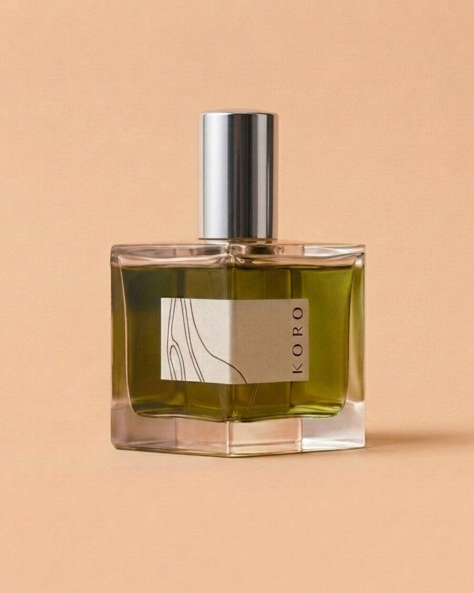
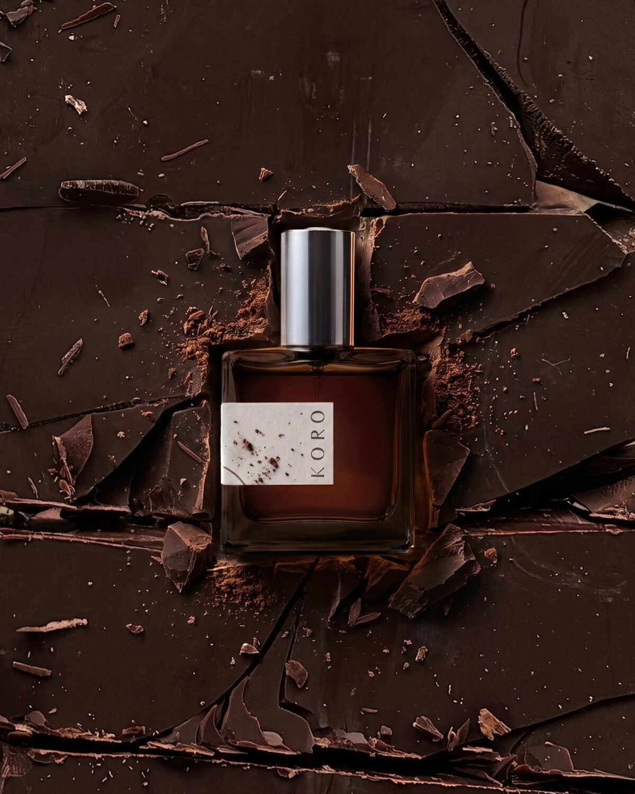
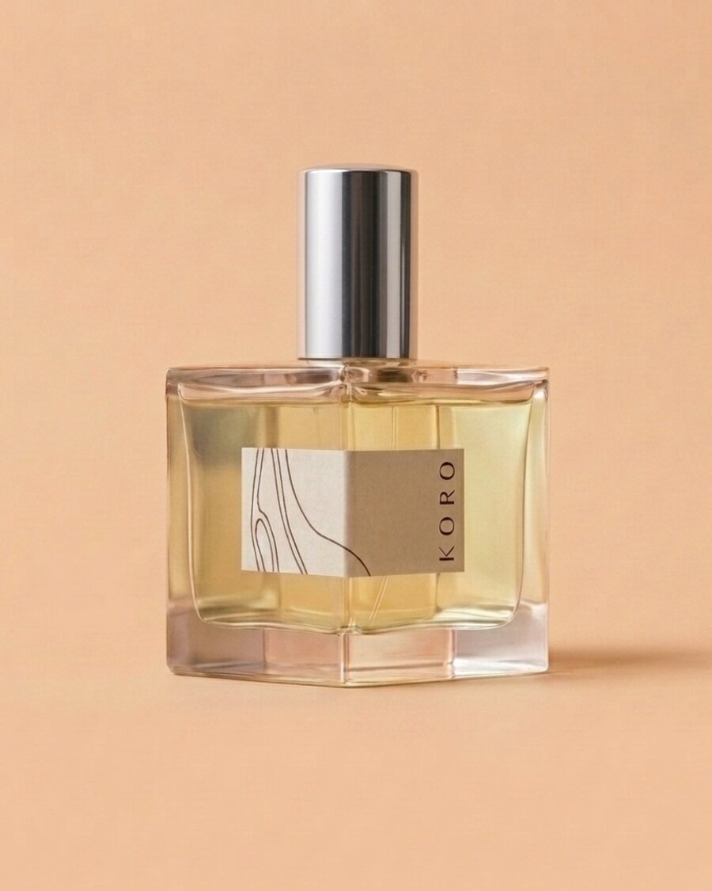
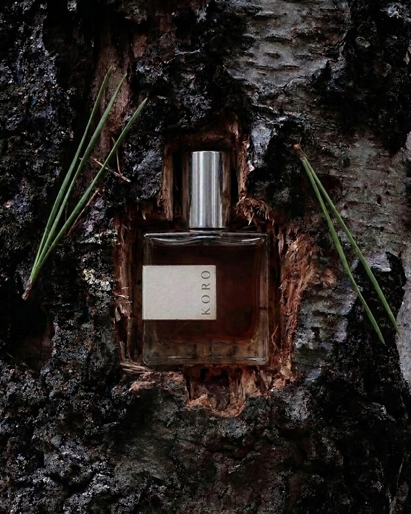
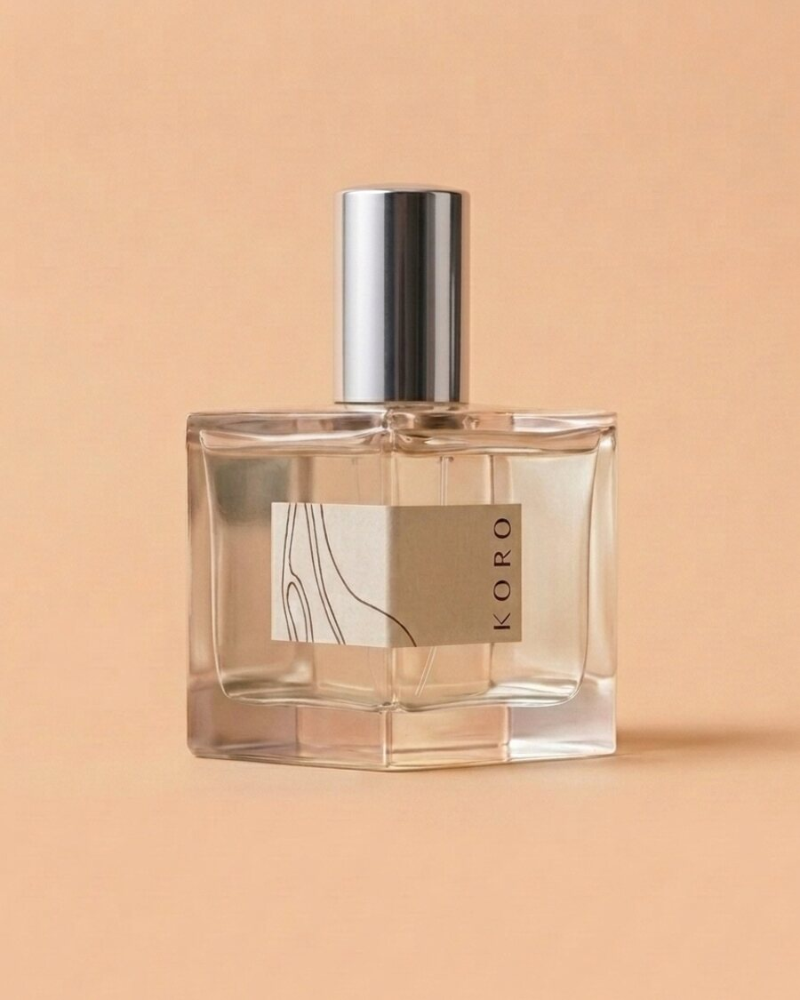
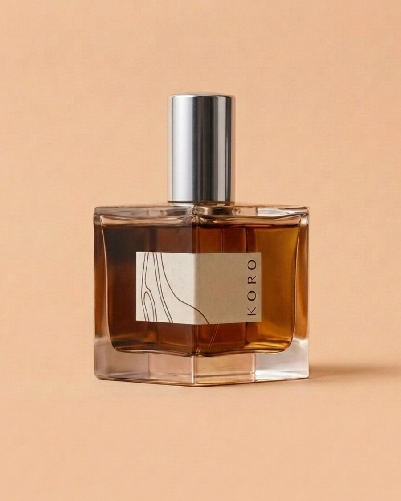
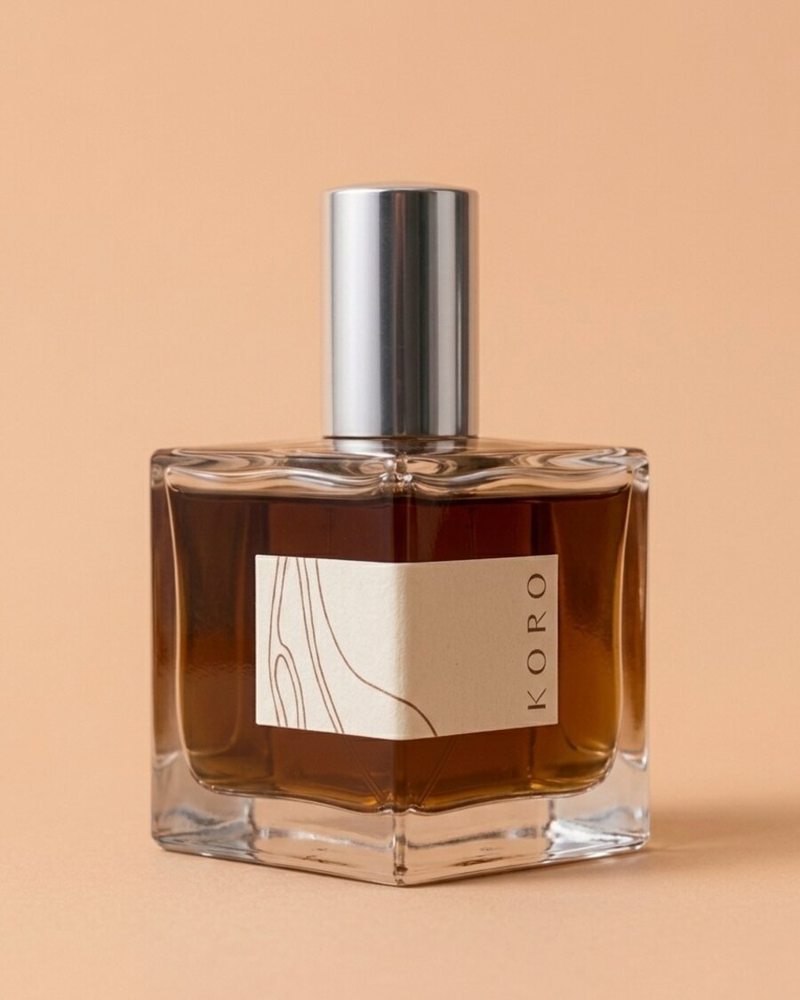
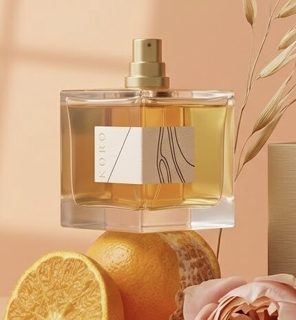
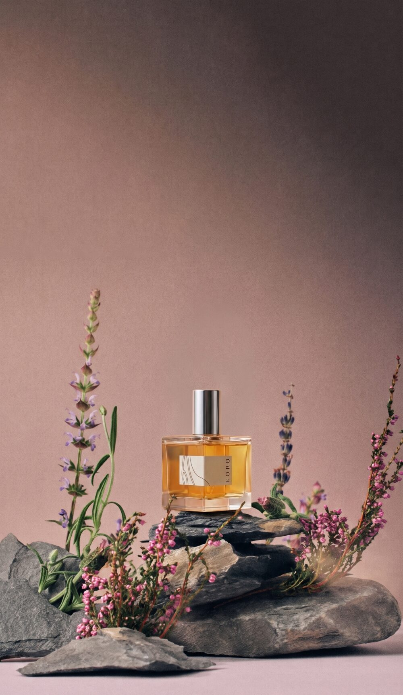

By day
By night
CEPHIR OLWEN
BOREALA
SADHANA BAHAAT
LAUDAN
SARAHA
AMRITA
Season · Autumn 26
Our autumn perfume arrives with five original watercolours, as cards or framed prints.
Discover the edition